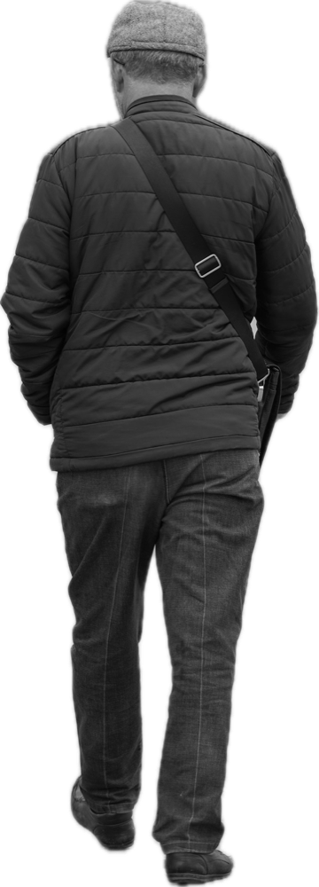
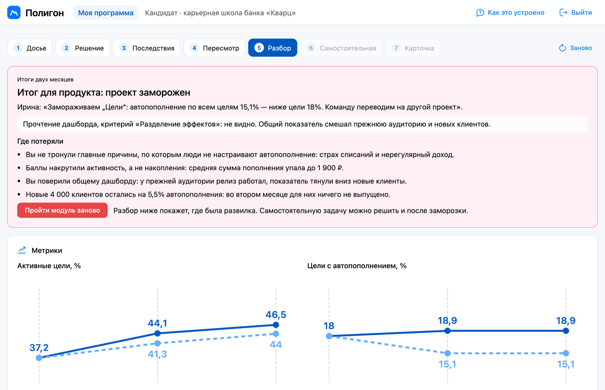
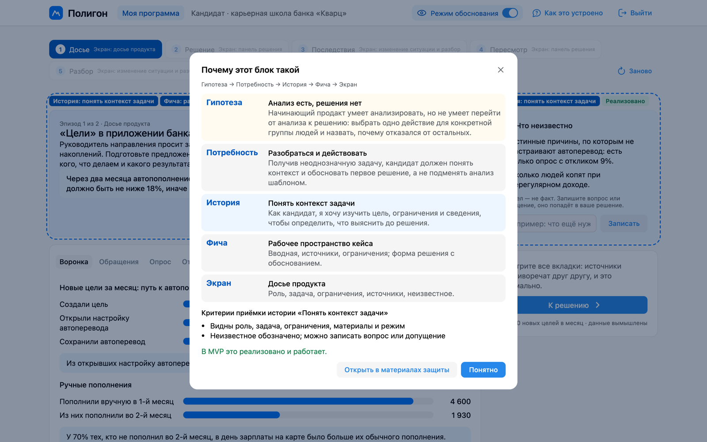
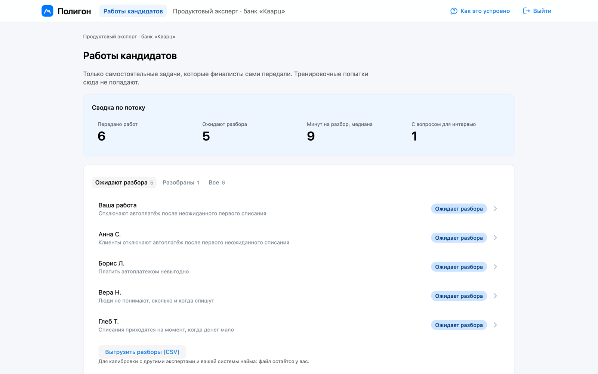

Симулятор продуктовых решений. Модуль практики перед интервью в карьерной школе банка
Курс «Принципы и подходы к разработке цифровых продуктов»
Мария Прегер · Ольга Федорова · Софа Ибрагимова · Роман Салимгареев
nominalnominalovich.github.io/polygon
Задача и исследование
Продукт
Стратегия
Задача · Исследование · Персоны · Развилки
С чего началось · опыт команды
«Казино»
Так студенты прозвали учебную симуляцию «Бизнес-курс: Максимум»: результат есть, а почему он такой, не видно
«Бесполезная трата рабочего времени»
Игра по технике безопасности
«Было очень тяжело»
Стажировка без онбординга
Что делаем и для кого
Модуль практики перед интервью в карьерной школе банка
Кандидат на junior-PM тренируется между шорт-листом и интервью
Эксперт банка разбирает переданную работу
Банк платит, для кандидата бесплатно
будущих продактов получали объяснение, почему решение сработало (уточняющий вопрос задавал интервьюер)
не отделили результат от внешнего события: сезонность, реклама, смена подрядчика, пицца
Гипотезы · статусы по интервью с LLM-персонами
Метод занятия 15.10: пять будущих продактов и два эксперта. Чего это не доказывает: персон придумала команда, модель обобщает типичный опыт; выводы проверяют формулировки гипотез, а не спрос. Следующий шаг: два-три живых интервью по тому же гайду
Алина
кандидат на junior-PM
Дмитрий
эксперт карьерной школы банка
Чего не ожидали
Эксперты расходятся на 8–10 баллов из 30 · разбор получает примерно каждый пятый · ИИ видно по отсутствию своих цифр. В продукт добавили итог из трёх уровней и поле «Что я допускаю»
Проблема с двух сторон: кандидат не отделяет свой эффект от внешнего события, а эксперт ищет расчёты и допущения, которые кандидат прячет
Основания: интервью с LLM-персонами и опыт команды. Полная схема от проблемы до экрана в отчёте
Задача и исследование
Продукт
Стратегия
Концепции · Участники · Путь · Демо · Прослеживаемость · Техника · Готово
Курс с заданиями
+ последовательно даёт основы
− решения между упражнениями не связаны
Сквозной проект с наставником
+ целостный проект
− последствия после запуска остаются обсуждением
В · Непрерывная симуляция
+ тренирует адаптацию к последствиям · − нужны обоснованные правила сценария
Выбор
В + короткий разбор из А
Риск В: «угадывание ответа автора». Поэтому правила последствий открыты
Кандидат
Эксперт банка
Автор кейса прототип
HR или методист банка правит кейс с проверкой сценария
Организатор программы
Запускает поток и выдаёт номера · за границей MVP
Пунктир: за границей MVP. Редактор кейса хранит правки в браузере, сервера и прав доступа нет. Сценарии с исключениями в отчёте
Досье и правило заморозки
Решение и подсказки
Последствия и событие
Пересмотр
Разбор с понятиями
Самостоятельная задача
Карточка для эксперта
Что у вас получилось
Решение 1 не стирается: эпизод 2 учитывает его
+4 000 новых клиентов в общем дашборде смешаны с эффектом решения
52 из 121
путей кончаются заморозкой: через два месяца автопополнение ниже 18%. Причина каждой видна в разборе
Перед стартом: программа и вводный тур. 45 минут: цель, замеров нет. Банк «Кварц», люди и данные вымышлены
nominalnominalovich.github.io/polygon
Страница жюри: …/polygon/#/jury

Резерв к пункту 3 · проект заморожен
Справа резерв на случай проблем с сетью. Банк «Кварц», люди и данные вымышлены
Гипотеза · подтверждена и расширена
«Никто не объясняет, почему вышло именно так»
Потребность
Отличить последствия своего выбора от внешних обстоятельств
История
Пересмотреть решение
Фича
Связанные эпизоды и история решений
Экран
Изменение ситуации и разбор
Режим обоснования · досье

Под каждой фичей в продукте видно гипотезы-основания. Таблица всех цепочек с кодами в приложении Д отчёта
Сейчас · один статический сайт
Интерфейс · React + VKUI
Движок сценария · детерминированный
Хранение · в браузере
Целевой продукт · сервисы
Внешний ИИ: только разбор текста, с проверкой экспертом
Качество: пять групп требований
01
Скорость и ёмкость
Цель ≈ 45 минут, замеров нет; расчёт в браузере
02
Надёжность и безопасность
Данные вымышлены; в выгрузке номер, имя в кабинете
03
Безопасность последствий
Эксперт видит только переданное; решения о найме нет
04
Изменяемость
Автотесты перед каждой публикацией
05
Стоимость
GitHub Pages; модуль 1 ≈ 14 ч, оценка команды
Пунктир: целевая версия. Для банка мы SaaS: до покупки он проверит персональные данные, выгрузку и условия выхода

Прототип эволюционный: остаются движок, формат сценария и тесты; заменим эвристику и хранение в браузере
Работает
Имитируется
Задача и исследование
Продукт
Стратегия
Рынок · Позиционирование · Самое опасное предположение · Ворота · Roadmap
| Последствия копятся между эпизодами | Разбор решений | Перенос на новую задачу | Материал для эксперта | Домен банка | |
|---|---|---|---|---|---|
| GoPracticeсюжетный симулятор | сюжет линейный | автопроверка | н/д | передачи работ нет | B2C-мессенджер |
| Школа менеджеров Яндексареальный проект | симуляции нет | наставник | н/д | офер части выпускников | продукты Яндекса |
| Forageкороткие job simulations | отдельные задания | н/д | н/д | профиль виден работодателю | банки есть, не проверено |
| Кейс-чемпионатыChangellenge Cup и подобные | кейс на неделю | жюри | н/д | преференции при найме | кейсы партнёров |
| Школы банков с отборомТ-Банк, ВТБ, Альфа, игра ОТП | у ОТП, без переноса | наставник, ИИ по чек-листу | н/д | путь к вакансии, карточки нет | финтех-кейсы |
| ПолигонMVP, модуль 1 | отделены от внешнего события | по 6 критериям, с понятиями | ближний: «Автоплатёж» | вопрос и итог по заданию | накопления на цель |
Ниша: объяснимые последствия вместе с материалом для живого вопроса эксперта банка
да частично нет н/д: не нашли. Источники на 23.10.2026: сайты аналогов, vc.ru, kod.ru, Хабр
Кандидат тренируется на последствиях, эксперт получает материал для живого вопроса. Решения о найме по карточке нет
Бюджет: две гипотезы
Отбор
от 15 тыс. ₽ за участника
ключ закрыт, задача меняется каждый поток
Подготовка
≈ 7 тыс. ₽
шаблон открыт, вопрос эксперта виден заранее
Выбор после первого разговора с банком. Персоны-эксперты платили из бюджетов HR: довод за «отбор», не доказательство
Рынок под клин · SAM
≈ 8–36
млн ₽ в год
20 организаций с карьерными школами (допущение) × ≈ 60 участников за поток (со слов персоны) × 1–2 потока в год × 7–15 тыс. ₽
Полная стоимость
Модуль 1 ≈ 14 ч, оценка команды задним числом · новая закрытая задача на каждый поток · часы экспертов банка · проверка ИБ и интеграция
Учат ли последствия и разбор отделять эффект решения от внешнего события лучше, чем кейс с разбором?
Техническое предположение закрыто: модель прозрачна и воспроизводима, это держат автотесты
Банковский пилот этого не измерит, как и качество найма. Не обещаем
«Автоплатёж» проверяет только ближний перенос: идёт сразу после разбора и повторяет скелет тренировки
Ворота перед вторым модулем
Где: учебный поток вуза
Сравнение: модуль против кейса с разбором (концепция А)
Метрика: доля работ «Автоплатёж», где эксперт вслепую ставит «видно» по разделению эффектов и ограничениям
Успех:
≥ 15 п.п.
разница в пользу модуля
Решение: второй модуль строим, только если ворота пройдены
Ворота 0, 1 и 2 про ключ, принятие и деньги: следующий кадр
До пилота: ключ модели
Слепая проверка двумя практиками: напоминания, понятный автоперевод, гибкое пополнение
Устоял, если оба дают не меньше половины значения модели. Иначе пересобираем
Гибкое пополнение вдвое слабее: сильных путей не остаётся
После потока ≈ 60 человек
Завершили ≥ 70% · стоп < 50%
Вопрос из карточки задан на ≥ 2/3 интервью · стоп < 1/3
Угадывали правила ≤ 20%
Медиана минут эксперта на карточку ≤ 10 (база со слов персоны: 20–40)
«Отбор»: не больше половины работ с одинаковым набором статусов
Деньги
Второй поток ≥ 60 участников по ≥ 15 тыс. ₽, это ≈ 0,9 млн ₽ за поток
или письмо о намерениях до бюджетной защиты
Закупку и ИБ, 3–6 месяцев со слов персон, закладываем в календарь
Кто решает
Владелец пилота с нашей стороны вместе с руководителем программы банка
Данные
В выгрузке номер кандидата, имя в кабинете. Работа в контуре банка, решения о найме по карточке нет
Сейчас
Пилот одного потока
ворота 0, 1 и 2
Дальше
Модули «Удержание», «Монетизация», «Стейкхолдеры» и новые варианты закрытой задачи
после ворот перед вторым модулем
Потом
Библиотека модулей по отраслям
персоне Ирины банковский кейс не подойдёт
Чего MVP не доказывает
ISPMA SPMBoK 2.0 · 40 элементов
5 тренируем · 1 частично · 8 ограничения · 26 нет
Правило, видно в досье
Через два месяца автопополнение по всем целям направления не ниже 18%, иначе проект заморозят
Самый сильный эффект
Гибкое пополнение у «нерегулярного дохода»: +25 п.п. активности, +40 п.п. автопополнения. Вдвое слабее: сильных путей нет
Месяц 1: ловушка дашборда
Прежняя аудитория → общий показатель: напоминания 18,9 → 15,1; напоминания и автоперевод 23,7 → 18,7; автоперевод и исследование 22,8 → 17,9
| Путь: эпизод 1 → эпизод 2 | Активные, % | С автопополнением, % | Исход |
|---|---|---|---|
| «Сильный путь» напоминания, автоперевод → гибкое пополнение, «автоперевод без страха», пуши реже | 55,0 | 30,8 | сильный рост |
| «Сначала исследование» автоперевод, исследование → гибкое пополнение, «автоперевод без страха» | 51,1 | 31,4 | сильный рост |
| Напоминания, автоперевод → умные напоминания, гибкое пополнение | 54,2 | 29,3 | уверенный рост |
| Напоминания → пуши как были, гибкое пополнение | 46,7 | 25,6 | уверенный рост |
| «Ловушка баллов» напоминания → пуши реже, баллы · средняя сумма 1 900 ₽ | 44,0 | 15,1 | заморожен |
| Баллы, исследование → баллы без накрутки, наблюдать | 40,0 | 14,3 | заморожен |
Старт: активные цели 37,2%, с автопополнением 18%. Сильный итог от 30%; без понятного автоперевода потолок 24,9–27,0%. Фото: Unsplash (Icons8, Vitaly Gariev, selcuk sarikoz)